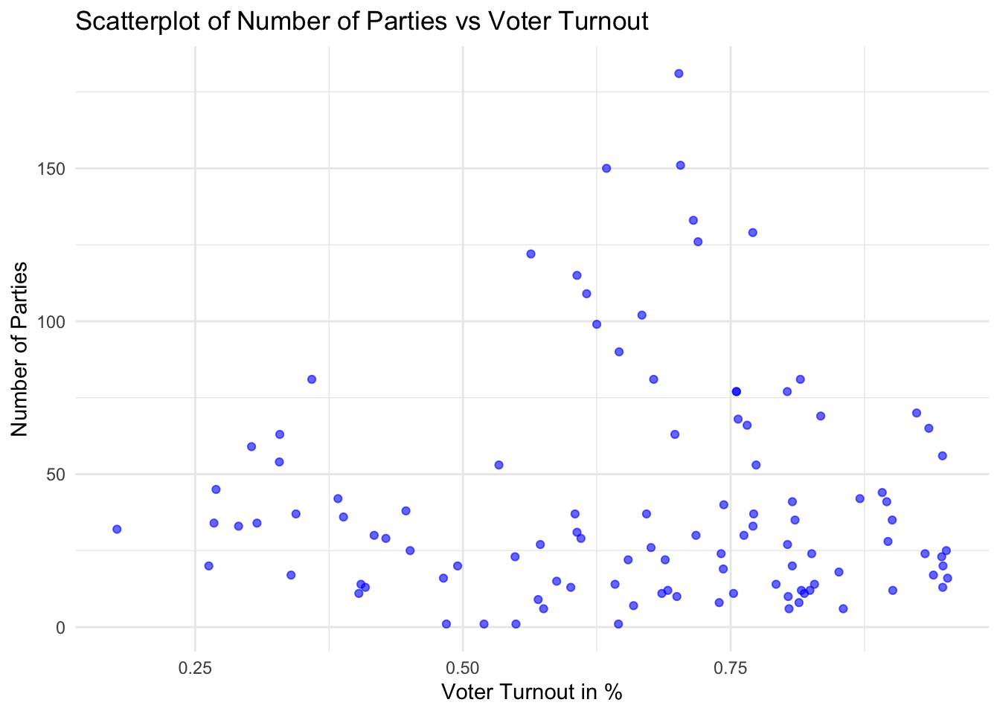

How does party fragmentation affect voter turnout and other measures of democratic strength in developing representative democracies?
Rationale and Datasets:
There are a number of studies in electoral research that have attempted to investigate the relationship between party fragmentation and measures of democratic strength. The direction of the effect, however, is widely disputed among political scientists. On the one hand, some scholars argue that greater fragmentation fosters pluralism, representation, and policy innovation by ensuring that a wider range of political interests are represented in the decision-making process. This, in turn, can enhance democratic legitimacy and participation. Other researchers contend that high levels of fragmentation can lead to governmental instability, inefficiency, and legislative gridlock, ultimately weakening democratic performance.
Multiple measures of democracy have been studied in the literature, including governmental stability, accountability, corruption, turnout, public goods provision, female representation and the representation of minorities (Valentim and Dias, 2023). The empirical findings from these studies are often contradictory concerning the direction of the effect of party fragmentation on democratic quality, even when comparing the same indicators.
A number of studies have also focused on characterizing the specific relationship between party fragmentation and political participation, measured by voter turnout. A large group of scholars argues that party system fragmentation likely depresses turnout since citizens vote for a small part of the government which will likely form a coalition to rule. Additionally, each individual candidate has a lower likelihood of winning elections in a fragmented party system, which may also discourage voter turnout. In empirical research, party fragmentation has also been found to be negatively correlated with voter turnout (Franklin and de Miño 1998; Geys and Heyndels 2006; Henderson and McEwen 2010; Jackman and Milner 1995; Kostadinova and Power 2007; Lehoucq and Wall 2004; Radcliff and Davis 2000). However, there is also empirical evidence pointing to a positive relationship between party fragmentation and voter turnout (Banducci and Karp 2009), though the authors find a stronger relationship when regressing on party polarization. The theoretical foundation behind this research is that a greater number of parties may increase voter turnout by providing more ideological options that align with citizens’ preferences, thereby encouraging participation. However, some scholars argue that an excessive number of parties can dilute ideological clarity and create confusion, potentially discouraging voter engagement.
All of the studies above that use country-level aggregate data focus on industrialized democracies. The justification for this is that those kinds of regimes are more consolidated democracies with very limited experience with authoritarianism and where the right to vote is generally guaranteed. Other studies have limited their research to a number of elections in a particular country, hoping to control for the endogeneity of political parties. I intend to empirically examine the relationship between political party fragmentation and voter turnout in developing democracies, particularly in Latin America. To avoid the aforementioned issues, I will establish a cutoff point based on scores of democratic strength provided by Freedom House and V-Dem. I will also complement the country choice with qualitative research to ensure that voting rights are respected to a high degree in all countries selected. My intent with studying a different subset of countries is to test whether the results and theoretical rationale from established democracies also explain the variation in emerging ones.
I only found one study that empirically tested the relationship between party fragmentation and voter turnout in Latin America. Carew Boulding and David S. Brown examine this topic in their study, “Does the number of political parties influence voter turnout in developing democracies?” Their research focuses on Brazil and Bolivia, concluding that differences in electoral systems shape the relationship between party competition and voter turnout. They find that in Bolivia, an increase in the number of parties is strongly associated with higher turnout, while in Brazil, the relationship is weaker and slightly negative. However, their study is limited to only two countries, which constrains the generalizability of their findings.
Data and Research Design
To examine this relationship, I will use data from the Constituency-Level Elections Archive (CLEA) and Varieties of Democracy (V-Dem). The particular dataset I am using to run this particular preliminary analysis is the CLEA Upper Chamber Elections Archive (I believe the links to the datasets for upper chamber and lower chamber are switched in the website based on the descriptions of each dataset). This dataset includes 181 elections from 24 countries. I am hoping to use a larger dataset in subsequent steps of the project to capture the relationship between the variables in developing countries, but this dataset will be a starting point to identify a preliminary pattern in the data. I use an upper chamber election dataset instead of presidential, gubernatorial, or mayoral elections to minimize differences in voting incentives between parliamentary and presidential systems.
Variables:
Dependent variable:
Voter turnout (measured in percentage)
Independent variable:
Party fragmentation (Measured by the number of political parties present in the government)
Other measures of the strength of democracy (will be included in subsequent stages)
Control variables:
Dummy variable indicating whether the country has compulsory voting (will be included in subsequent stages)
Each observation in the dataset corresponds to the performance of a specific party in a given election. Since I intend to have each election as a unit of observation, I have combined the number of rows that correspond to the same election and created an additional column for the number of parties that participated in each. The variable num_parties corresponds to the number of parties and the variable to1 is the percentage of voter participation in that given election.
# Load necessary librarylibrary(ggplot2)# Read the CSV filedata <-read.csv("/Users/camilaparanhos/Downloads/Elections_Filtered.csv")# Remove rows where num_parties or to1 have negative values which correspond to N/Aelections_data <-subset(data, num_parties >=0& to1 >=0)# Create the scatter plotggplot(elections_data, aes(x = to1, y = num_parties)) +geom_point(color ="blue", alpha =0.6) +labs(x ="Voter Turnout in %",y ="Number of Parties",title ="Scatterplot of Number of Parties vs Voter Turnout" ) +theme_minimal()

Regression Model
I will run a linear regression using the following formula to test the hypotheses presented in this proposal:
# Create linear regression modelregression_model <-lm(to1 ~ num_parties, data = elections_data)# Display the model summarysummary(regression_model)
Call:
lm(formula = to1 ~ num_parties, data = elections_data)
Residuals:
Min 1Q Median 3Q Max
-0.48722 -0.11416 0.03333 0.14427 0.28889
Coefficients:
Estimate Std. Error t value Pr(>|t|)
(Intercept) 6.633e-01 2.826e-02 23.474 <2e-16 ***
num_parties 2.599e-05 5.124e-04 0.051 0.96
---
Signif. codes: 0 '***' 0.001 '**' 0.01 '*' 0.05 '.' 0.1 ' ' 1
Residual standard error: 0.1962 on 106 degrees of freedom
Multiple R-squared: 2.427e-05, Adjusted R-squared: -0.009409
F-statistic: 0.002572 on 1 and 106 DF, p-value: 0.9596
In this preliminary version of the model, there is no statistically significant relationship between the number of parties and voter turnout, which may not be the case if more variables are added as controls to the model.
Later on, I intend to test robustness by running models with both legislative and presidential turnout data to see if results differ.
However, one concern that was addressed by Valentim and Elias (2014) is the endogeneity of political parties that are specific to the political context of the countries in which they operate. The authors argue that this endogeneity may bias results and contribute to the ambiguity of results in empirical scholarly research on party fragmentation and voter turnout. Therefore, I am also considering a regression model that includes the use of an Instrumental Variable to mitigate the endogeneity risk. This could be a variable that affects party fragmentation but not directly related to voter turnout. Before setting in a specific IV, I would test out different IVs and see how correlated they are to each of the variables. Some potential instruments include whether the country has a federal or unitary system of government, and the geographic size of a country or total population. In this case, the Two-Stage Least Squares (2SLS) IV Regression Model would be as follows:
First stage: Predicting party fragmentation with an instrument
Another research design I am considering would be to perform a Difference-in-Differences (DiD) analysis leveraging potential electoral reforms in Latin American countries that changed the number of contesting parties to assess their impact on voter turnout before and after the reform.
Bibliography
Banducci SA and Karp JA (2009) Electoral systems, efficacy, and voter turnout, in Klingemann H-D (ed.), The Comparative Study of Electoral Systems. Oxford: Oxford University Press, 109–36.
Franklin MN and de Miño WPH (1998) Separated powers, divided government, and turnout in U.S. Presidential elections. American Journal of Political Science 42(1), 316–26.
Geys B and Heyndels B (2006) Disentangling the effects of political fragmentation on voter turnout: The Flemish municipal elections. Economics & Politics 18(3), 367–87.
Henderson A and McEwen N (2010) A comparative analysis of voter turnout in regional elections. Electoral Studies 29(3), 405–16.
Jackman RW and Milner RA (1995) Voter turnout in industrial democracies during the 1980s. Comparative Political Studies 27(4), 467–92.
Kostadinova T and Power TJ (2007) Does democratization depress participation? Voter turnout in the Latin American and Eastern European transitional democracies. Political Research Quarterly 60(3), 363–77.
Lehoucq F and Wall DL (2004) Explaining voter turnout rates in new democracies: Guatemala. Electoral Studies 23(3), 485–500.
Radcliff B and Davis P (2000) Labor organization and electoral participation in industrial democracies. American Journal of Political Science 44(1), 132–41.
Valentim, Vicente, and Elias Dinas. 2024. “Does Party-System Fragmentation Affect the Quality of Democracy?” British Journal of Political Science 54(1): 152–78. Doi: 10.1017/S0007123423000157.